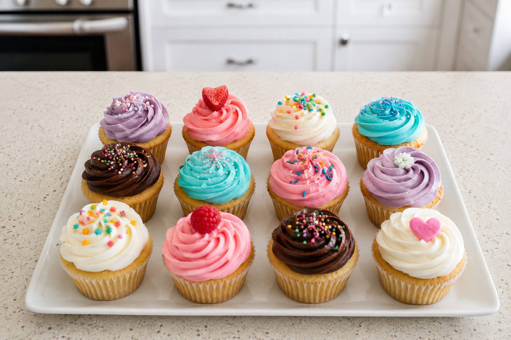
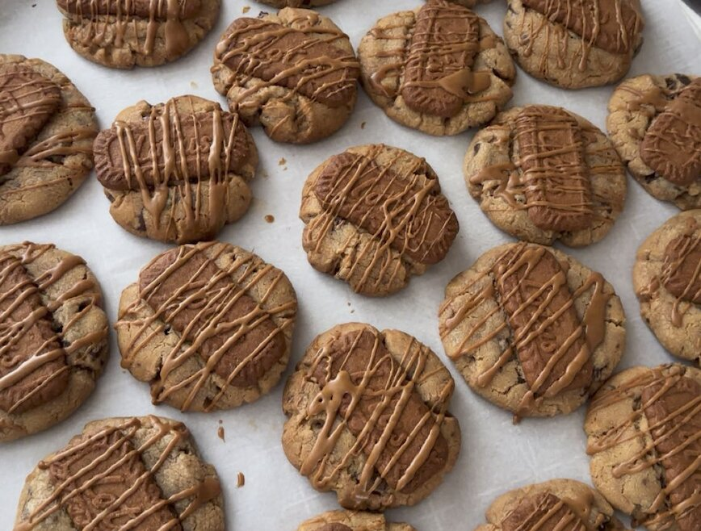
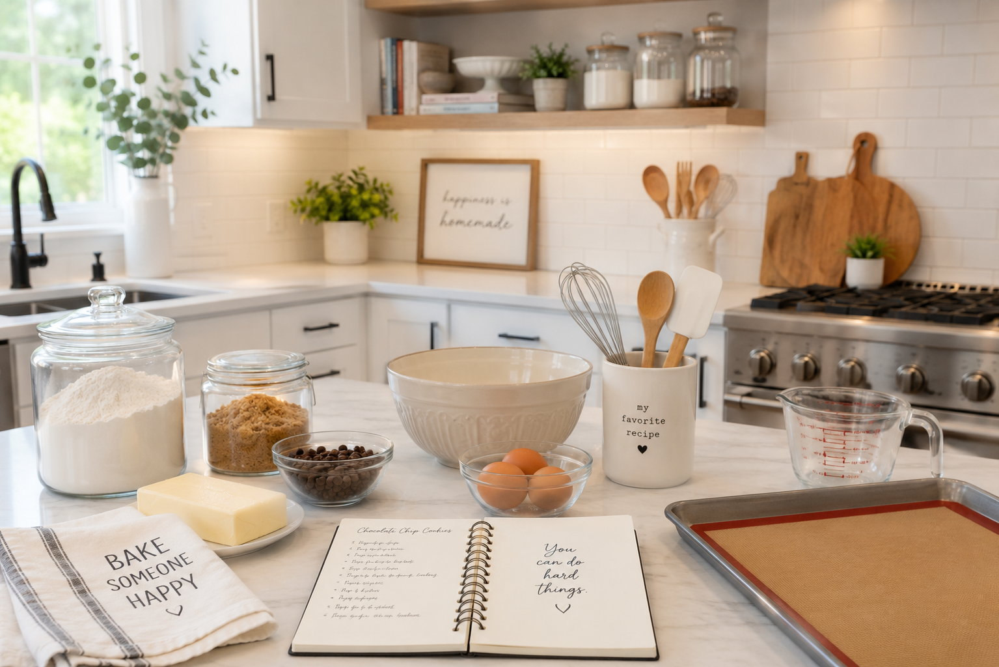
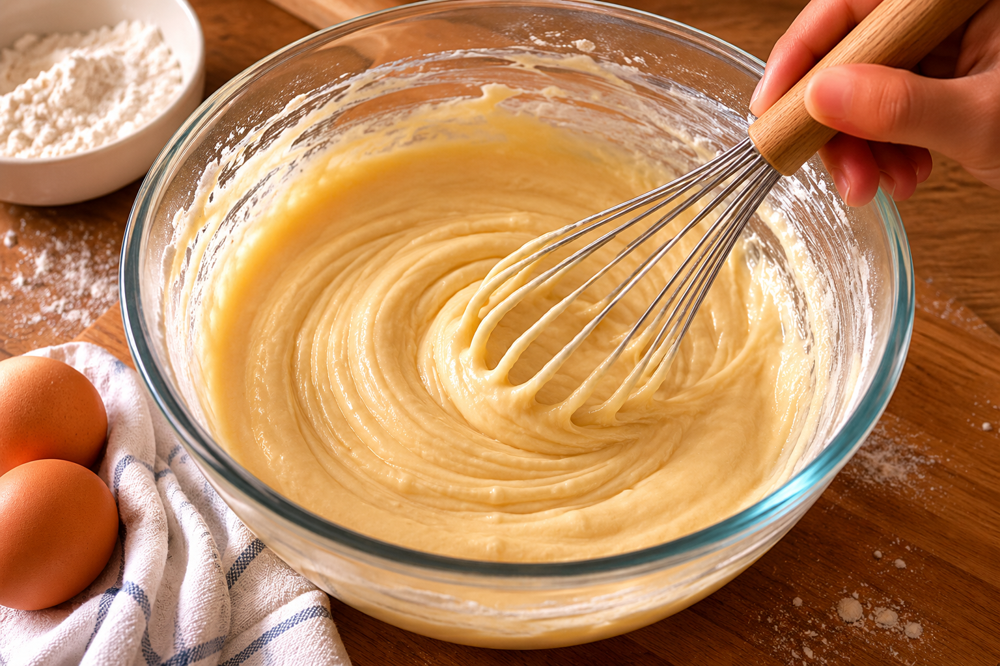
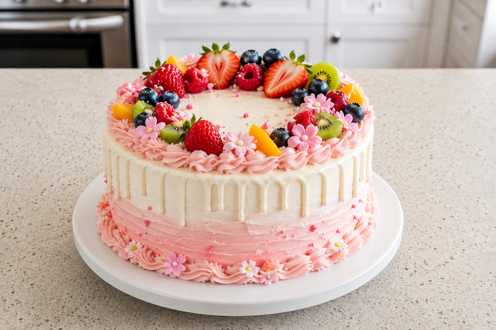

About me and my baking hobby
Througout my entire life I've been surrounded by baking. My grandmother, aunts, and mom all love to bake
From constantly helping my family bake to now baking whenever I get the chance, it's always been a hobby of mine.
- Favorite dessert: Chocolate cake
- Favorite cookie: Chocolate chip
- Favorite bread: Banana bread

AI Prompt: Fresh chocolate chip cookies cooling on a baking rack.
What is Baking?
Baking is one of my favorite hobbies because it allows me to be creative while making delicious treats.
I enjoy experimenting with recipes and learning new decorating techniques.
- Cakes
- Cookies
- Muffins

AI Prompt: Photorealistic tray of homemade cupcakes with colorful frosting on a bright kitchen counter.
When Do I Bake?
I usually bake on weekends when I have extra time.
Holiday seasons are my favorite time for baking special treats.
| Season | Favorite Recipe |
|---|---|
| Spring | Lemon Cake |
| Summer | Berry Muffins |
| Fall | Pumpkin Bread |
| Winter | Holiday Cookies |
AI Prompt: Assorted holiday cookies displayed on a festive table.
Where Do I Bake?
Most of my baking takes place in my home kitchen.
I also enjoy baking for family gatherings and celebrations.
- Home Kitchen
- Family Gatherings
- Holiday Events

AI Prompt: Bright modern kitchen prepared for a baking session.
How Do I Bake?
Baking requires patience, preparation, and attention to detail.
Following recipes carefully helps ensure good results.
- Gather ingredients
- Preheat oven
- Mix ingredients
- Bake and cool

AI Prompt: Baker mixing cake batter in a bright, modern kitchen.
Why I Love Baking
Baking helps me relax and reduce stress.
It allows me to express creativity through recipes and decorations.
I enjoy sharing homemade treats with friends and family.

AI Prompt: Beautiful homemade celebration cake with elegant decorations.
AI Prompts
Photorealistic tray of homemade cupcakes with colorful frosting on a bright kitchen counter.
Fresh chocolate chip cookies cooling on a baking rack in a cozy kitchen.
Assorted holiday cookies displayed on a festive table.
Bright modern kitchen prepared for a baking session.
Baker mixing cake batter in a bright, modern kitchen.
Beautiful homemade celebration cake with elegant decorations.